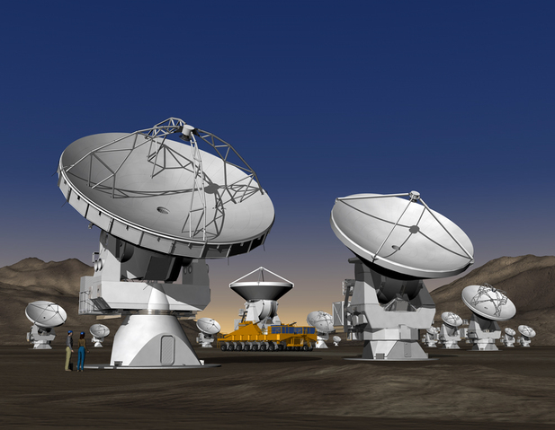

ALMA is an acronym for the Atacama Large Millimetre/submillimetre Array, a telescope currently being constructed at an altitude of 5000 m on Llano de Chajnantor, a plane in the north Chilean Andes. ALMA is an international facility, comprising partners from Europe, Taiwan, Japan, Chile and North America. When it is fully completed in 2012, it will be the largest ground-based telescope the world has ever seen.
The Andean site was chosen due to its favourable climatic conditions. Its high altitude means that at ALMA’s operating wavelengths of 0.3–9.6 mm, the dry atmosphere will be largely transparent. ALMA’s 64 individual 12-m moveable antennae with baselines from 0.15–18 km will provide unprecedented sensitivity, resolution and frequency-coverage at these wavelengths. The typical achievable spatial resolution of 10 milliarcsec is 10 times better than that available with the Very Large Array or Hubble Space Telescope.
In being primed for the detection of cosmic emission in the submillimetre regime, ALMA will be sensitive to the cool Universe. This includes emission from dust and molecules in galaxies at high redshift, from molecular gas at the centre of the Milky Way, from molecular gas in star-forming regions and from molecules and dust in evolved stars.
